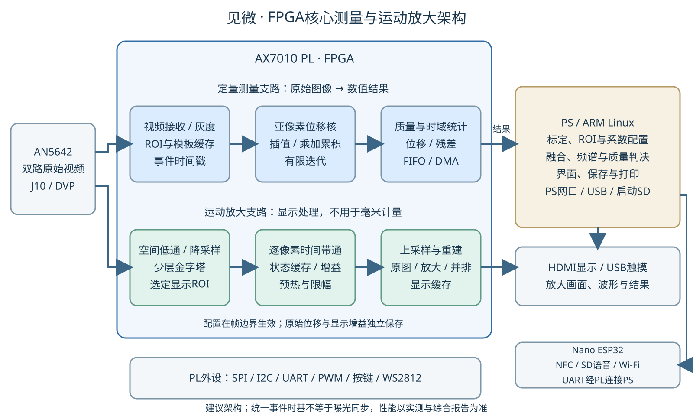

FPGA核心方案建议稿 · 2026/10/21
本文给出拟实施的系统方案。硬件接口沿用现有主载板和前面板；算法模块、资源预算和性能数字按“建议目标／示例／待测”标识，不代表已有可运行固件或已达到整机精度。原稿记录约45fps观测，正式配置需附原始采样日志。
见微是一台面向低频振动观察、巡检辅助和教学的非接触式视觉测振仪。相机获取目标表面的微小运动，FPGA实时提取多测点位移，并生成运动放大画面；ARM Linux完成尺度标定、频谱分析、测量管理和报告，Nano ESP32提供联网、NFC和语音服务。
作品核心为：FPGA多测点亚像素位移测量＋受限区域视频运动放大＋可追溯的数据质量。
视觉方法可在同一视场分析多个可见测点，但依赖纹理、照明、安装和采样条件。单只加速度计通常对应一个安装点，多通道系统可以测多点；扫描式激光测振也能分析振型。本项目突出可视化、非接触多点和现有硬件上的实现，不预设比专业仪器更高的计量精度。

定量测量支路：原始图像 → 灰度／校正配置 → ROI与模板 → PL位移引擎 → 带时间戳的像素位移及质量 → PS尺度映射、去趋势、频谱及带限指标 → 显示、存档、报警与报告。
运动放大支路：原始图像 → 空间低通／降采样与少层金字塔 → PL时间带通 → 放大增益与限幅 → 上采样重建／ROI融合 → HDMI显示。该支路只生成显示图像，放大后的视频不回流到定量测量支路。
| 部分 | 核心职责 |
|---|---|
| AX7010 PL | 视频接收、跨时钟域缓存、ROI位移及质量、事件时间戳、受限区域放大；经J11的SPI/I2C/UART、PWM、按键与WS2812接口 |
| AX7010 PS／Linux | 相机配置、标定与ROI管理、融合／质量决策、频谱、触摸界面、存档、打印任务和整机管理；PS侧网口、USB及启动SD由相应驱动管理 |
| Nano ESP32／Arduino | PN532读卡、辅助SD与I2S语音、Wi-Fi/NTP/MQTT任务；与AX按协议交换命令、结果和事件 |
| 主载板 | 12V输入与多电源支路、接口与电平转换、补光／报警／风扇／打印负载驱动 |
| 前面板 | EC11、K101和五颗状态灯；控制事件及灯数据由AX处理 |
采集基线沿用厂家AN5642的DVP→AXI Stream→VDMA／DDR链路，再加入自主算法IP。ALINX例程
实际有效采样率记为fs，按图像采集时间戳计算，并分别记录左右目。理想均匀采样下频率需满足f＜fs/2；这个条件不保证幅值准确，也不能排除更高频振动混叠。
原稿记录约45fps。首版建议先验证0.5–10Hz，将10–20Hz作为扩展验证范围，而非保证频带。后续通过降低图像尺寸或调整模式提高实际采样率时，重新确认曝光、图像质量、双路稳定性和标定。
近似矩形曝光对正弦位移的幅值响应为Hexp(f)＝|sin(πfTexp)/(πfTexp)|。20Hz、20ms曝光的理想响应约0.757，说明“满足奈奎斯特”仍可能产生明显幅值衰减。优先缩短曝光并稳定照明；曝光响应补偿只在模型经实测验证、噪声允许的频段内启用。
测量期间固定曝光、增益、白平衡和焦点等会改变纹理／尺度的设置。OV5640卷帘读出要求额外评估不同图像行的采样时差；不把帧时间戳精度当作光学曝光同步精度。双目硬件是否支持共同曝光控制、实际偏移多大，由模块资料和实测确定。
检查混叠采用扫频、参考传感器和不同采样率重复测试；这些检查不构成理想抗混叠滤波器。出现丢帧时先保留原始时间和缺口，按已验证方法分段分析或重测；不通过任意插值把缺失数据变成“采样合格”。
建议先支持4个目标ROI，另留1个背景参考ROI；不能将4个物理运算核作为默认资源需求。一个共享流水引擎配合ROI独立状态，可在每帧内轮询完成多个测点。
推荐候选为平移模型的梯度迭代／逆组合Lucas–Kanade：模板预处理后复用梯度和小矩阵，运行时进行插值、残差和乘加累积，最终得到dx、dy。逆组合方法的预计算特性有原始研究依据；本项目的具体硬件划分仍需浮点与定点验证。CMU报告
软件阶段用纹理标记、真实视频和合成亚像素平移比较该候选与现有相位相关／模板匹配实现，按精度、失效率和资源估算冻结一种首版方法。SAD可作为整数初定位；不将SAD代价曲线插值自动等同高精度亚像素测量。
建议的初始规格为：8bit灰度，32×32模板，带搜索／插值边界的当前ROI，2～3次有上限的迭代，位移范围先限制在已验证区间。ROI放大到64×64、增加搜索范围或复杂形变模型，需要重新估算计算和存储。模板在一次记录中保持固定，重建模板、丢失重捕获或参考切换产生新的config_id／测量分段，不无标记地拼接位移序列。
| 模块 | 数据处理与状态 |
|---|---|
| video_ingress | 接收像素／行帧标志；每路帧编号、溢出和尺寸检查；异步FIFO跨域 |
| roi_capture | 按坐标提取模板及当前窗口，维护乒乓缓存；与帧／配置编号绑定 |
| template_prepare | 纹理／梯度计算、矩阵准备、弱纹理和退化检查 |
| subpixel_align | 双线性插值、残差乘加、参数更新；迭代次数与位移越界限制 |
| quality_gate | 残差、纹理、收敛、饱和、遮挡／边界和数值溢出标志 |
| motion_filter_stats | 经确认的时间滤波、峰值／RMS统计，保留原始位移和滤波延迟信息 |
| result_writer | 结果FIFO／DMA、处理周期、完成时间戳和中断；不可用旧结果冒充新帧 |
弱纹理或单一边缘可能使二维位移不可辨，输出相应无效标志；不以硬件强行输出一个数来维持显示。背景运动补偿先由PS进行几何／质量判断，验证通过后才考虑将确定的运算下沉PL。
建立“浮点模型→位精确软件模型→RTL仿真→实板”的同输入校验。每个阶段记录最大误差、RMS误差、失效率和溢出。位移输出可先评估16bit有符号Q8.8（含符号的8bit整数部分、8bit小数部分）或更细格式；1/256像素是表示步进，不是仪器精度。累加器、矩阵、倒数和滤波状态位宽依据最坏输入和误差预算确定，禁止默认全部16bit。
PS通过AXI-Lite提交ROI、模板、滤波系数和阈值；PL在帧边界原子切换配置。结果建议携带frame_id、roi_id、config_id、原始帧事件时间、dx_px、dy_px、残差、quality_flags和处理周期。字段为待实现的数据契约，寄存器地址、DMA通道、驱动节点与设备树按实际工程交付。
采用空间少层金字塔的线性欧拉方法作为首版显示方案；相位法可作为离线质量对照，待资源和精度证据充分后再考虑硬件实现。欧拉线性放大与相位放大是不同方法，不把“亮度或相位滤波”混写成同一个已实现内核。MIT线性方法、MIT相位方法
1. 空间低通与降采样：先滤波再按空间坐标缩小，构造少层高斯图像及拉普拉斯层。细节层、图像边界和奇数尺寸处理在模型与RTL中一致。首版不做时间降采样，以保留已有限的采样频带。
2. 时间带通：对选定层的每个像素维护独立状态，按帧更新。系数对应实际fs；改变频段或采样率后重算系数并标记初始化过渡期。空间高斯滤波不能代替时间抗混叠滤波。
3. 增益与有效范围：放大带通分量，限制各层增益，监测过曝、裁剪和噪声。增益大不代表微小运动测得更准；在已验证的小运动范围内使用。
4. 上采样与重建：按金字塔对应尺度上采样、滤波和叠加放大分量，再与原始画面／ROI融合。上采样用于画面重建，不恢复真实测量细节。相位法若未来加入，其相位重建须使用对应方法，不能直接套线性相加。
5. 显示隔离：支持原图／放大／并排。记录显示增益、频段和预热状态；UI缩放、视频放大均不改变mm/px标定或原始位移记录。
显示带通可先由用户选择固定频段；主频识别后由PS建议新频段。切换频段有状态过渡，不能将滤波刚启动的瞬态当作稳定振动。整条显示链的延迟与测量链延迟分别测量。
Zynq-7010资源上限为17600 LUT、80 DSP、60个36Kbit块RAM；留给自主算法的实际空间需扣除视频、VDMA、AXI、显示和接口基础工程。AMD选型表
| 估算项目 | 示例值与含义 |
|---|---|
| 双路640×480、45fps | 有效像素约27.648Mpixel/s；YUV422有效写入数据约55.296MB/s，不含消隐／总线损耗。640×480是计算示例，不宣称该模式已实测。 |
| 4个32×32测点的双图像缓存 | 当前帧与模板各8bit，合计8KiB；未计背景ROI、边界、梯度、矩阵、FIFO和BRAM组织开销。 |
| 128×128显示ROI、在64×64及32×32两层滤波 | 若每位置两个16bit时间状态，状态约20KiB；未计空间滤波行缓存、图像和重建数据。 |
| 320×240、每位置两个16bit时间状态 | 仅状态已300KiB，超过器件约270KiB原始BRAM容量；按32bit数据宽度使用时有效容量还会减小。选择更小ROI／尺度或明确使用DDR。 |
| 帧时间预算 | 45fps时一帧约22.22ms；“核心计算≤10ms”可作为建议目标，须用实际PL时钟、所有ROI和路由后时序证明。 |
DMA／DDR预算同时包含原始采集写入、显示读取、放大状态读写和PS访问；只算摄像头像素率不等于完成带宽分析。连续DVP源不能因Linux或显示阻塞而无限等待；FIFO、帧缓存、溢出标志和恢复条件需要明确。采用VDMA处理视频帧，采用合适的数据DMA或受控FIFO处理数值结果，不能直接混用视频行TLAST与任意结果包格式。AMD视频设计指南
FPGA优势优先体现为流水处理、共享乘加引擎的可控时限、硬件事件记录和减少ARM逐像素工作量。FFT的数据率远小于视频像素率，列为可选增强，不以堆叠IP数量代替核心算法贡献。
队友现有深度算法保留为软件验证资产。首版可用静态／低频更新的稀疏测点深度辅助尺度标定；逐帧微小位移由PL时间追踪得到。视差深度与时间位移追踪分属不同问题，不要求首版完整稠密深度全部硬件化。
理想校正双目有Z＝fpx·B/d，误差近似σZ≈Z²σd/(fpx·B)。原稿假设Z=1m、B=0.06m、fpx=1100、σd=0.05px时约0.758mm，计算成立，但它是单次深度不确定度示例，不等同动态深度差的振幅噪声；两个独立时刻作差还要计入两个时刻的误差。前后运动仅在同步、噪声和幅值验证通过后作为扩展能力。
面内毫米换算在近似正视、固定深度、小位移条件下使用dmm≈dpx·Z/fpx。一般倾斜面使用局部标定／单应性；已知长度或已知位移也能给尺度，ToF并非必需。更改分辨率、裁剪、焦点或镜头后检查标定适用性。
| 模块 | 作用与验收边界 |
|---|---|
| VL53L1X | 工作距离／同平面尺度检查；其视场及光轴与每个图像ROI不一致，不直接把中心距离用于全部测点。ST资料 |
| LSM6DSV | 固定于相机支架，记录角速度／加速度；首版用于运动质量门控。补偿需要轴向、时差、几何和深度模型，不直接从像素位移扣除IMU数值。 |
| GY-291／ADXL345 | 固定于被测点附近，先对照频率；幅值仅在同轴、同频带、信噪比及安装质量足够时对照。它不是默认校准真值。 |
| GY-SHT40 | 低速环境记录；与视觉／惯性数据分别记录采样周期和有效状态。 |
PL统一计数器记录帧边沿、DRDY等事件。图像ROI的有效曝光时刻还应考虑行位置、读出／曝光偏移；传感器需记录内部ODR、滤波延迟、FIFO样本序号和丢样。SHT40／ToF没有与图像相同的采样时刻，不强行标为同步样本。
ADXL345配置全分辨率时通常约4mg/LSB；“最高13bit”不等同所有量程下均13bit。对于单频正弦，同一幅值定义下X＝A/(2πf)²，需转换g与m/s²并同轴比较。禁止把有漂移的直接双积分当作位移标定。ADI手册
LSM6DSV从Mode0起步，ADXL345按Mode3；每事务切换模式只是必要步骤。GY-291的SDO硬绑检查、共享SPI误识别I2C的适配／资格测试仍须落实，沿用硬件交接要求。
使用原始位移序列及时间戳，在合格连续数据段中去趋势、加窗并计算频谱。完整记录DFT频率网格为1/T；Welch按每段时长计算，实际可分辨能力另受窗与噪声限制。保留主频估计方法、窗、幅值修正、频带、单位和峰值／峰峰值／RMS定义。
单频有V＝2πfX；多频带限速度RMS由各频率分量加权或由速度功率谱积分，不用主频乘整个宽带位移RMS。报告标注“某频段内的位移／速度指标”，不与其他频带的指标直接比较。
首版采用按测点、工况和有效频带设定的自定义阈值，含滞回和持续时间。ISO10816-1的后续一般指南为ISO20816-1；具体机器需检查对应分部。本项目的低频结果不直接宣布符合机器宽带振动评级。ISO官方说明
正常、预警、报警之外，单列预热、追踪丢失、弱纹理、过曝、丢帧、相机晃动、标定失效和参考通道失效。测量无效不等于正常；历史有效结果保留测量ID与时间，不冒充本次结果。左右目一致性只有在同一物理测点、投影映射、时间对齐和各自质量有效时才参与判据；共同光照干扰仍需静止背景与亮度统计识别。
相机AN5642接AX7010 J10；主载板J801接J11。主载板与前面板分别为独立PCB。补光为J301约9W侧灯、J304约2W正面灯，测量默认稳定恒亮；PWM与卷帘快门兼容性未验证前不作精密测量调光方式。打印前结束采集并关闭补光，控制12V/5A整机预算。
PN532负责测点身份，EM5820H为已确认12V版，板端J401为PH2.0五针，打印机端按真实针序转接。MAX98357A驱动8Ω/3W无源喇叭；三色灯与有源蜂鸣器另走负载接口。DS3231负责日历时间，INA226负责功率监测，U102比较器负责快速掉电预警。K101长按请求Linux安全关机，不自动切断12V总电源。
操作流程：识别测点 → 对准和照明 → 选择测量／参考ROI并确认标定 → 采集与质量检查 → 显示波形、频谱和放大画面 → 自定义阈值判级 → 保存／打印／上传。报警静音不清除仍存在的报警条件。
AX保存最终测量记录及大容量原始数据；Nano侧SD主要用于语音、配置与辅助缓存。MQTT经Nano传输结果和状态，协议V1需补齐发布命令、记录分片／确认、离线队列及失败语义后实施，不能把尚未定义的功能写成已有能力。
| 阶段 | 交付物 | 进入下一阶段的条件 |
|---|---|---|
| 1 平台与采样 | 厂家基线、两路原始视频、帧时间戳和曝光／丢帧日志、基础工程资源报告 | 模式与有效采样率可复现；双路时差已量测 |
| 2 软件算法基线 | 位移、质量、频谱和受限ROI放大；带已知运动的合成／真实测试集 | 明确首版算法、噪声、适用范围及失败条件 |
| 3 PL测量核 | 定点模型、RTL、仿真、至少4测点＋背景、AXI配置与结果DMA | 同输入误差通过；所有ROI满足帧预算；质量／溢出标志可触发 |
| 4 PL显示核 | 低通／降采样、少层带通、增益限制、上采样重建、旁路 | 实时显示无破坏采集；缓存与DDR状态预算、预热及延迟可解释 |
| 5 标定和扩展 | 尺度、曝光／时间响应、参考传感器与双目稀疏尺度 | 同轴／同频带对照通过；相机晃动和光照伪振动能被识别 |
| 6 整机与展示 | 交互、NFC、语音、MQTT、报告及软件／FPGA对照 | 多次重复演示稳定；结果与版本、原始数据和配置可追溯 |
外设基础驱动可并行准备，测量标定与质量验证先于“正式测量结果”。手机视频可用于算法预研，不用其可变帧率／曝光结果替代AN5642整机验收。
以下均为建议目标／待测项。高难度目标未达到时按实测结果收敛，不编写保证值。
| 指标 | 建议目标或报告方式 |
|---|---|
| 初始有效频带 | 45fps观测条件下先验证0.5–10Hz；10–20Hz另做扫频、曝光与混叠验证 |
| 测点 | 4个目标ROI＋至少1个背景参考ROI；记录各自有效率 |
| 静态位移噪声 | 目标≤0.02px RMS；至少30s原始测量支路数据，声明去趋势／滤波条件；不是绝对精度 |
| 幅值误差 | 在规定频率、幅值和SNR范围内目标≤10%，由已知位移验证；毫米指标按实际标定填写 |
| 主频误差 | 扫频实测最大／RMS误差；10s的0.1Hz仅标为DFT网格示例 |
| 定点误差 | 建议先以RMS≤0.005px、最大≤0.02px评估算法移植误差，再依据总预算调整；不得把它作为已验证结果 |
| 延迟与吞吐 | 统计PL核周期、曝光／帧边沿到结果及到屏幕的延迟和P50/P95/P99／最大值；持续测试丢帧及溢出 |
| 资源与时序 | 报告基础工程、自主位移核、显示核和整机LUT/FF/DSP/BRAM；给出路由后时序与实际时钟 |
| CPU与数据流量 | 同输入、同分辨率／ROI、同算法比较ARM软件与PL版本，区分核时间、DMA与显示开销 |
| 功率 | 用相同照明、显示、网络状态记录整机功率；需要时比较每个有效结果的能量，不把整机读数直接叫作PL动态功耗 |
软件对照包含两种：①浮点模型衡量数值精度；②同板PS上同规格的优化实现衡量实际加速。FPGA与电脑Python的运行时间不能单独证明同平台加速倍数。若两方案都达到相机帧率，展示处理延迟、CPU释放和最大内核吞吐，不声称相机采样率被算法加速提高。
现场选择低频、频率／位移可核实的外部振源，展示原图与PL放大、多个测点位移、参考通道同频带对照，以及相机晃动时的无效标记。根部、中部、尖端幅值变化可作为振动形态展示；正式模态／相位结论需满足时序与结构模型条件。
增加一项FPGA证据展示：同一原始片段切换PS算法与PL算法，显示结果差异、核延迟、CPU占用和有效率，附资源报告。回放需把原始帧送入同一PL内核，标注“原始数据回放”；预先生成的放大成片单独标为演示视频。
交付包含Vivado／HLS／RTL与测试、XSA／bitstream、设备树和Linux镜像、PS与Nano源码、版本锁定、算法浮点及定点模型、测试视频与采样时间、标定文件、协议及结果格式、性能日志和重建步骤。评价重点为FPGA实际完成的测量与显示计算，以及可重复的结果和优势证据。